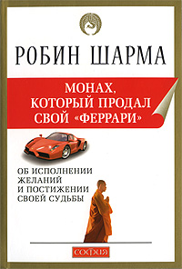

| Обложка книги | Информация о книге | Цена |
| Краткое описание книги | ||
«Мужчины с Марса, Женщины с Венеры»Один из величайших бестселлеров нашего времени. Это книга, изменившая к лучшему судьбы великого множества людей. Большинство проблем в отношениях мужчины и женщины возникают потому, что мы действительно разные. И не просто разные люди — мы с разных планет. Наш подход к большинству вопросов отличается настолько, что для настоящего взаимопонимания необходим особый общий язык. И эта книга поможет каждому и каждой этот язык найти и освоить. А когда мы его выучим, исчезнет большинство причин быть несчастливыми в любви, в семье, в деловых отношениях. Книга предназначена для всех мужчин и женщин старше 16 лет. |
300.00 руб. | |
«Как завоёвывать друзей... (полный, в 3-х частях)»В данном издании собраны три наиболее популярные работы великого американского оптимиста XX века Дейла Карнеги: «Как завоевывать друзей и оказывать влияние на людей», «Как развить уверенность в себе и влиять на людей путем публичных выступлений», «Как перестать беспокоиться и начать жить». Изданные миллионными тиражами во всем мире, эти книги выдержали испытание временем и по-прежнему сохраняют актуальность в наши дни для всех тех, кто чувствует потребность в добром глотке здравого смысла. |
350.00 руб. | |
|  |
«Монах, который продал свой 'Феррари'»Ставшая бестселлером во многих странах мира книга Робина Шармы рассказывает нам необыкновенную историю
Джулиана Мэнтла — адвоката-миллионера, которому довелось пережить духовный кризис.
Погружение в древнюю культуру изменяет его жизнь; он открывает для себя действенные, мудрые практические
знания, которые учат нас:
|
400.00 руб. |